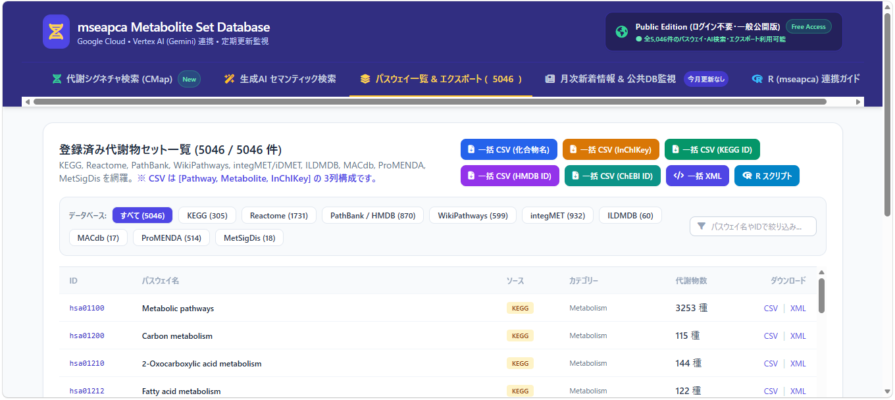
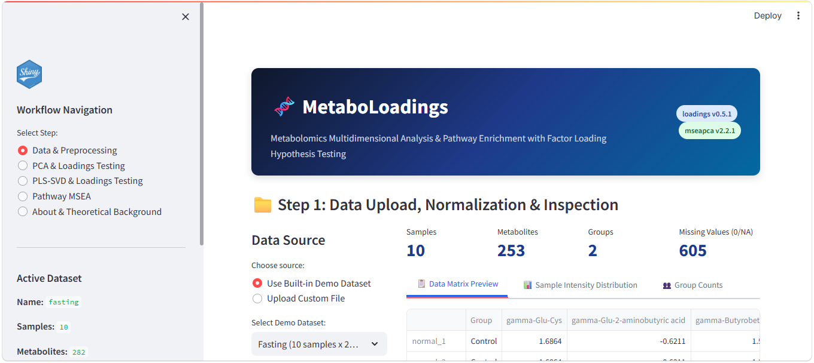
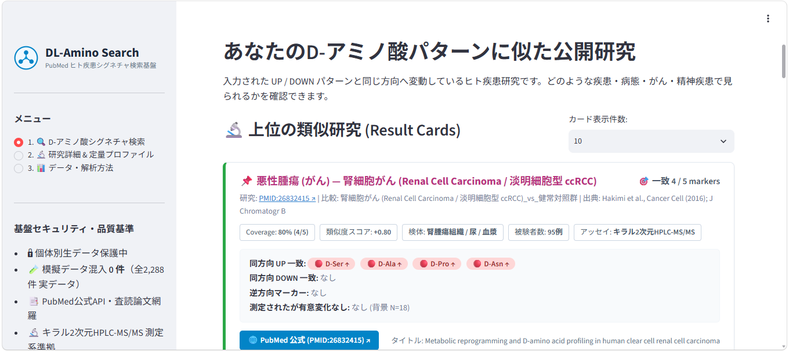
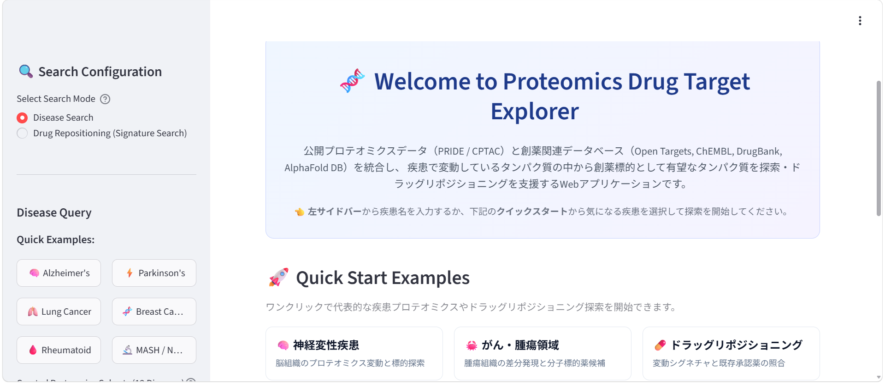
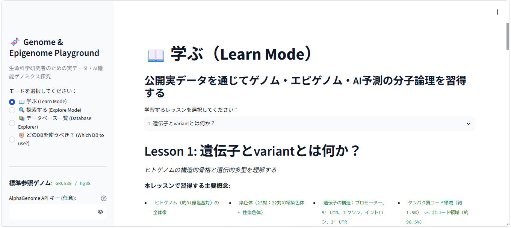

Cross-Omics Contrast DB

腸内細菌叢とメタボロームの公開研究を、比較条件（contrast）という共通単位でつなぐ探索基盤。
疾患、介入、時点、試料などを整理し、「同じ問いを扱う研究」をオミクス横断で発見できるようにします。研究単位ではなく比較単位で接続することで、統合解析候補の探索を現実的にします。
Metabolite Set Database

分散する代謝物セットを、検索・比較・エクスポートできる一つの基盤へ。
KEGG、Reactome、PathBank、WikiPathwaysなど複数の公開資源から5,046セットを整理。名称やIDによる検索に加え、生成AIを利用した意味検索とRパッケージ mseapca への接続を想定しています。
Cytokine Signature Search

UP / DOWNしたサイトカインの組み合わせから、似た免疫応答を示す公開研究を探す。
ImmPortのヒト免疫研究を比較可能なシグネチャへ変換。同方向・逆方向の一致、測定背景、研究情報を一画面で確認し、疾患・感染・ワクチン研究との接点を探索できます。
MetaboLoadings

PCA・PLS-SVDとパスウェイ解析を、一つの画面で進めるメタボロミクス解析アプリ。
データのアップロードと前処理から、PCA、PLS-SVD、ローディングの仮説検定、Pathway MSEAまでを段階的に実行できます。Rパッケージ loadings と mseapca の機能を、研究者が画面操作で利用できる形にまとめています。
DL-Amino Search

D-アミノ酸のUP / DOWNパターンから、似た変動を示すヒト疾患研究を探す。
PubMedの査読済み論文から、キラル2次元HPLC-MS/MSによるD-アミノ酸データを整理。同方向・逆方向の一致、検体、被験者数、測定法、原著論文を一画面で確認できます。
BioProduction Explorer
目的化合物から、生産反応・候補酵素・多段階経路をまとめて探索するバイオ生産支援アプリ。
PubChem、ChEBI、Rhea、UniProtKB、BRENDA、SABIO-RK、AlphaFold DBなどを横断し、速度論情報、3D構造、候補生物、関連文献まで一画面で確認できます。Geminiを利用した探索支援にも対応しています。
Proteomics Drug Target Explorer

疾患で変動するタンパク質から、創薬標的候補と既存薬の再利用可能性を探索するアプリ。
PRIDE・CPTACの公開プロテオミクスデータと、Open Targets、ChEMBL、DrugBank、AlphaFold DBなどの創薬関連情報を統合。疾患名による標的探索と、変動シグネチャを用いたドラッグリポジショニングに対応しています。
Genome & Epigenome Playground

ゲノム・エピゲノムとAI予測を、公開実データを使って学び、探索する教育・研究支援アプリ。
学習、探索、データベース一覧、目的に応じたデータベース選択の4つのモードを用意。GRCh38 / hg38を基準に、遺伝子やvariantの基礎から公開データの使い分けまで学べ、AlphaGenome APIを利用した予測探索にも対応しています。